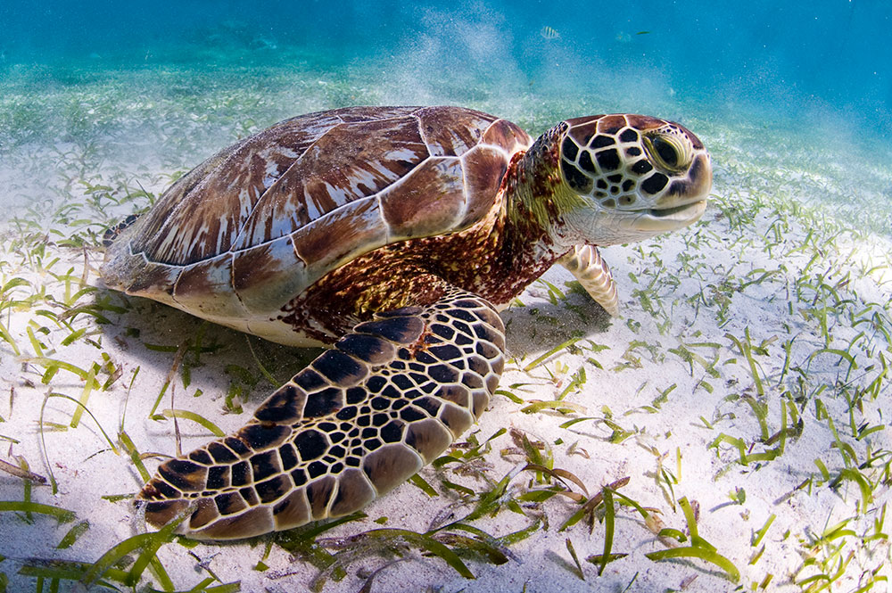

Reptiles
Este tipo de tortuga es un animal muy bonito, que podemos ver en muchos mares tropicales y otras aguas cálidas. Son reptiles acuáticos caracterizados por tener un gran caparazón, cubriendo toda su espada, contando también con escamas duras, que están presentes tanto en la cabeza como en las extremidades. En el pasado se cazaban mucho para comerlas y hoy muchas quedan atrapadas en las redes de mallas de los pescadores, lo que ha hecho que estén en peligro de extinción.
Las serpientes marinas no son demasiado diferentes de las terrestres. Hablamos de reptiles acuáticos de sangre fría, contando con escamas, lenguas bifurcadas y también cambian de piel regularmente. Este tipo de serpientes además son anfibias al respirar aire. Las podemos ver en su mayoría en las aguas tropicales del Pacífico, especialmente Australia e Indonesia. Aunque necesitan de aguas cálidas para vivir, la tormenta a veces las puede arrastrar hasta zonas frías como en el puerto de Sidney.
Existen varios tipos, pudiendo medir entre 1,7 m y 6,7 metros de longitud. Son reptiles acuáticos que tienen e su alimento las ratas, ratones, aves, peces o langostas. Son unos cazadores impresionantes que atrapan a sus presas por sus grandes mandíbulas, aplastándolas y engulléndolas enteras. No mastican o rompen su comida en partes, como sucede con otros animales, lo que habla de la fortaleza de su aparato digestivo.
La iguana marina habita en las islas Galápagos exclusivamente. Eso sí, también debemos hablar de que hay otras subespecies pertenecientes a otras islas, pero las más famosas son las Fernandina e Isabela, siendo las de tamaño más grande.